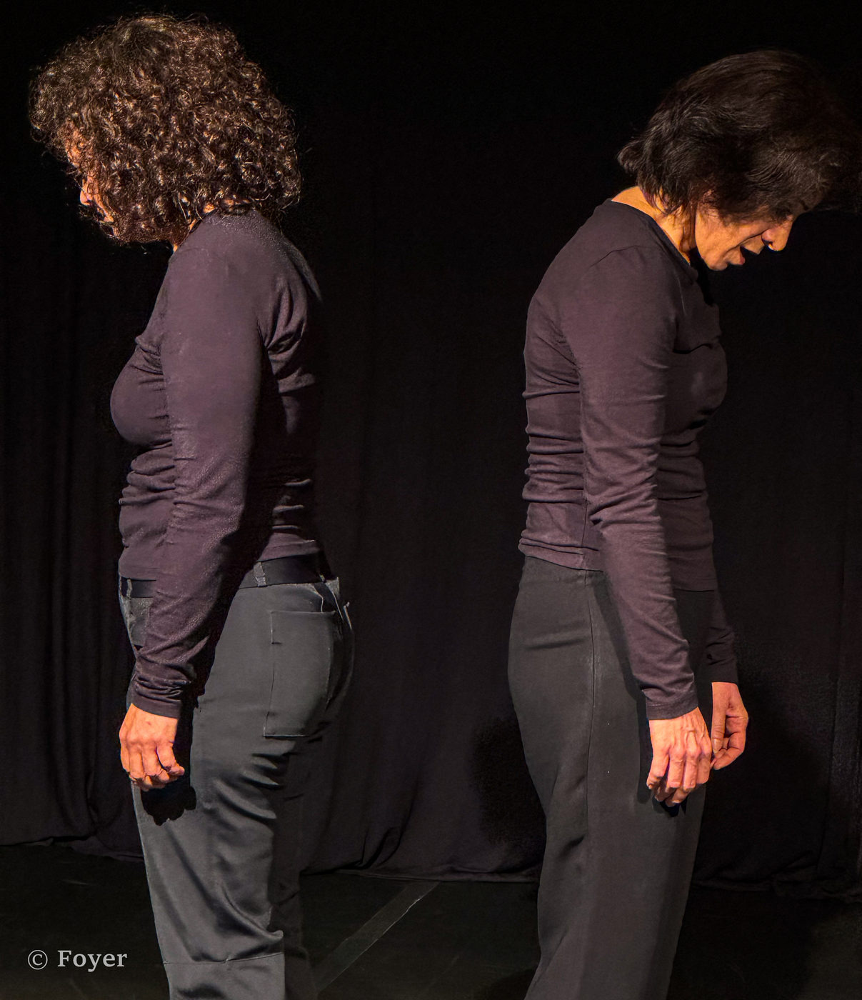
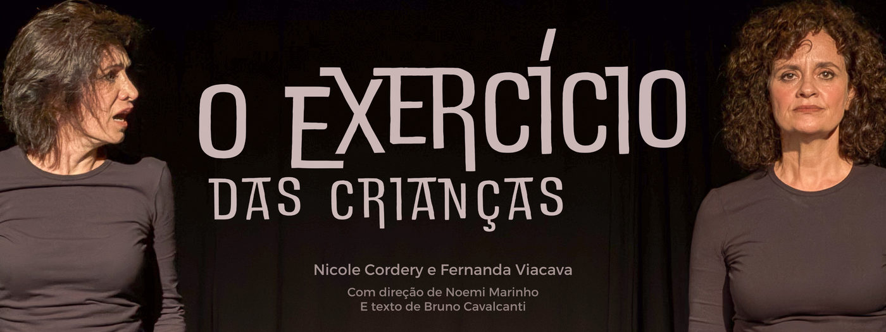

O Exercício das Crianças: Um Encontro Entre Traumas, Afetos e o Teatro do Absurdo

Se Beckett e Nelson Rodrigues resolvessem tomar um café — ou, mais apropriadamente, um conhaque — é provável que dali saísse algo muito parecido com este espetáculo.
De Beckett, encontramos o absurdo, que transforma a espera em poesia e o silêncio em grito (digo isso não só pelo texto, mas pela direção). De Nelson, é possível adentrar a visceralidade das emoções, um mergulho profundo na alma humana, despida de pudores. Essa mistura improvável, mas harmônica, cria um cenário onde o drama cotidiano flerta com o existencialismo, e o banal revela camadas de tragédia.
O Exercício das Crianças, escrito por Bruno Cavalcanti e dirigido por Noemi Marinho, nos apresenta a história de duas irmãs, Marta e Carla, que se encontram após 15 anos de afastamento. Carla retorna ao lar que abandonou para tentar reconquistar um espaço depois da morte do pai, enquanto Marta, que permaneceu ali, cuidando dele em seus anos de enfermidade, já não se reconhece mais nas relações que tinha ou tem. Essa premissa, simples, desdobra-se em um estudo psicológico bem-humorado e ácido que explora as feridas deixadas por um caso de abuso na infância.
São 55 minutos de movimentos calculados e sincronizados, nos quais as atrizes Nicole Cordery e Fernanda Viacava intercalam os pontos de vista das personagens, oferecendo camadas de interpretação que transitam entre o cômico e o desconcertante. A princípio, as duas irmãs parecem levemente descompensadas, mas, conforme a trama avança, o público é levado a rir "de nervoso", acompanhando ações frias e incisivas moldadas por traumas passados.

Apesar da ambientação intimista e da proximidade das atrizes com o público, a sensação de deslocamento é constante. Esse artifício, que aproxima o espetáculo do teatro do absurdo beckettiano, exige do espectador o desapego da linearidade para mergulhar na narrativa fragmentada.
Bruno Cavalcanti, Noemi Marinho e Nicole Cordery formam um trio que encontra, no humor e na meticulosidade, um ponto de equilíbrio que parte de um bom texto, atravessa uma direção personificada, e encontra uma atriz preparada para entregar uma personagem vivida e definitivamente articulada.
Agora quando essa formação encontra o talento de Fernanda Viacava é que a coisa ganha mesmo uma forma interessantemente nova, ela trás uma leveza aos gestos e uma respiração pausada e ordenada que acaba, por fim, conferindo ao espetáculo uma autenticidade que ultrapassa o “bom demais” e alcança o genuíno.
Há, contudo, pequenos percalços técnicos. A iluminação do espaço, por exemplo, poderia desenhar melhor as silhuetas e reforçar a distância emocional entre as irmãs, que quase nunca se tocam, separadas pela escuridão simbólica do palco. Mas essa questão é pontual e não compromete a experiência.
É digno de nota que este espetáculo foi estruturado em um formato experimental, com ingressos vendidos ainda “na planta”, sem um produto finalizado. Em tempos em que a produção independente muitas vezes se intimida diante das dificuldades e estagna, iniciativas como essa merecem aplausos — de pé, por mais de cinco minutos.
O Exercício das Crianças é um espetáculo completo. Mesmo inserido em um contexto onde muitas peças abordam temas semelhantes, destaca-se tanto pela construção cênica quanto pela dramaturgia afiada. Provoca de maneira única, usando o melhor que o teatro pode oferecer: a força da atuação, que evoca as raízes do jogo teatral que todos, em algum momento, conhecemos — ainda crianças, quando tudo o que queríamos era desinibir as verdades escondidas em nós mesmos.

O Exercício das Crianças está em cartaz no Espaço de Provocação Cultural, às quartas e quintas-feiras, às 20h, até o dia 28 de novembro. Os ingressos podem ser adquiridos diretamente com a equipe do espetáculo, com pagamento via Pix.